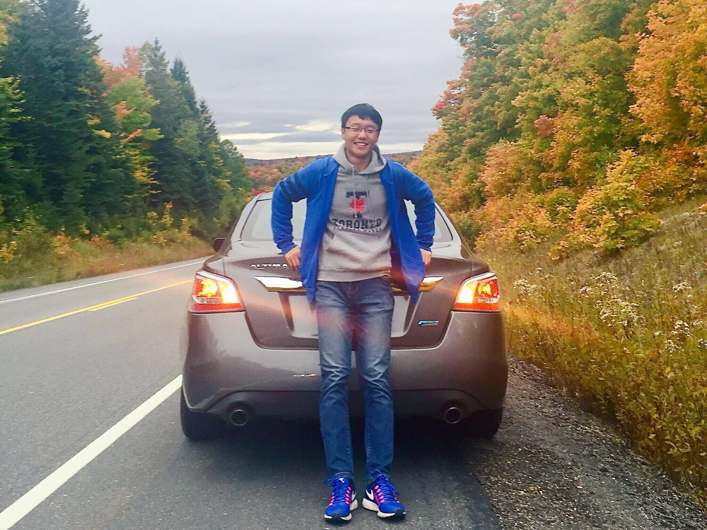

|
Shu Liu
Co-founder & Technical Head
SmartMore Corporation Limited
22/F, Sanhang Technology Building, Gaoxinnanjiu Road,
Nanshan District, Shenzhen 518075, P.R. China
Email: liushuhust [at] gmail [dot] com
|

|
After one wonderful year in Tencent, I co-found the fast-growing startup SmartMore.
Before that, I got my Ph.D. degree in Computer Science and Engineering Department, The Chinese University of Hong Kong (CUHK) in 2018.
My supervisor is Prof. Jiaya Jia. Prior that, I received the B.E. degree in Software Engineering from Huazhong University of Science and Technology (HUST) in 2014.
My research interest includes computer vision and deep learning.
I am recruiting self-motivated full-time researchers, developers and interns in computer vision and deep learning. If you are interested in, please directly send your CV to my email.
-
LISA: Reasoning Segmentation via Large Language Model
Xin Lai, Zhuotao Tian, Yukang Chen, Yanwei Li, Yuhui Yuan, Shu Liu, Jiaya Jia.
IEEE Conference on Computer Vision and Pattern Recognition (CVPR), 2024
-
Prompt Highlighter: Interactive Control for Multi-Modal LLMs
Yuechen Zhang, Shengju Qian, Bohao Peng, Shu Liu, Jiaya Jia.
IEEE Conference on Computer Vision and Pattern Recognition (CVPR), 2024
-
Scalable Language Model with Generalized Continual Learning
Bohao Peng, Zhuotao Tian, Shu Liu, Ming-Chang Yang, Jiaya Jia.
International Conference on Learning Representations (ICLR), 2024
-
Ref-NeuS: Ambiguity-Reduced Neural Implicit Surface Learning for Multi-View Reconstruction with Reflection
Wenhang Ge, Tao Hu, Haoyu Zhao, Shu Liu, Ying-Cong Chen.
IEEE International Conference on Computer Vision (ICCV), 2023
Oral Presentation, Best Paper Final List, top 0.2%
-
Not All Steps are Created Equal: Selective Diffusion Distillation for Image Manipulation
Luozhou Wang, Shuai Yang, Shu Liu, Ying-Cong Chen.
IEEE International Conference on Computer Vision (ICCV), 2023
-
DSGN++: Exploiting Visual-Spatial Relation for Stereo-based 3D Detectors
Yilun Chen, Shijia Huang, Shu Liu, Bei Yu, Jiaya Jia.
IEEE Transactions on Pattern Analysis and Machine Intelligence (PAMI), 2023
-
ResLT: Residual Learning for Long-tailed Recognition
Jiequan Cui, Shu Liu, Zhuotao Tian, Zhisheng Zhong, Jiaya Jia.
IEEE Transactions on Pattern Analysis and Machine Intelligence (PAMI), 2023
-
Adaptive Perspective Distillation for Semantic Segmentation
Zhuotao Tian, Pengguang Chen, Xin Lai, Li Jiang, Shu Liu, Hengshuang Zhao, Bei Yu, Ming-Chang Yang, Jiaya Jia.
IEEE Transactions on Pattern Analysis and Machine Intelligence (PAMI), 2023
-
Rethinking Out-of-distribution (OOD) Detection: Masked Image Modeling is All You Need
Jingyao Li, Pengguang Chen, Zexin He, Shaozuo Yu, Shu Liu, Jiaya Jia.
IEEE Conference on Computer Vision and Pattern Recognition (CVPR), 2023
-
Point2Pix: Photo-Realistic Point Cloud Rendering via Neural Radiance Fields
Tao Hu, Xiaogang Xu, Shu Liu, Jiaya Jia.
IEEE Conference on Computer Vision and Pattern Recognition (CVPR), 2023
-
Hierarchical Dense Correlation Distillation for Few-Shot Segmentation
Bohao Peng, Zhuotao Tian, Xiaoyang Wu, Chengyao Wang, Shu Liu, Jingyong Su, Jiaya Jia.
IEEE Conference on Computer Vision and Pattern Recognition (CVPR), 2023
Highlight Paper
-
Learning Context-aware Classifier for Semantic Segmentation
Zhuotao Tian, Jiequan Cui, Li Jiang, Xiaojuan Qi, Xin Lai, Yixin Chen, Shu Liu, Jiaya Jia.
AAAI Conference on Artificial Intelligence (AAAI), 2023
-
DecoupleNet: Decoupled Network for Domain Adaptive Semantic Segmentation
Xin Lai, Zhuotao Tian, Xiaogang Xu, Yingcong Chen, Shu Liu, Hengshuang Zhao, Liwei wang, Jiaya Jia.
European Conference on Computer Vision (ECCV), 2022
-
Efficient Neural Radiance Fields
Tao Hu, Shu Liu, Yilun Chen, Tiancheng Shen, Jiaya Jia.
IEEE Conference on Computer Vision and Pattern Recognition (CVPR), 2022
-
Generalized Few-shot Semantic Segmentation
Zhuotao Tian, Xin Lai, Li Jiang, Shu Liu, Michelle Shu, Hengshuang Zhao, Jiaya Jia.
IEEE Conference on Computer Vision and Pattern Recognition (CVPR), 2022
-
Parametric Contrastive Learning
Jiequan Cui, Zhisheng Zhong, Shu Liu, Bei Yu, Jiaya Jia.
IEEE International Conference on Computer Vision (ICCV), 2021
-
Learnable Boundary Guided Adversarial Training
Jiequan Cui, Shu Liu, Liwei Wang, Jiaya Jia.
IEEE International Conference on Computer Vision (ICCV), 2021
-
Video Instance Segmentation With a Propose-Reduce Paradigm
Huaijia Lin, Ruizheng Wu, Shu Liu, Jiangbo Lu, Jiaya Jia.
IEEE International Conference on Computer Vision (ICCV), 2021
-
Guided Point Contrastive Learning for Semi-Supervised Point Cloud Semantic Segmentation
Li Jiang, Shaoshuai Shi, Zhuotao Tian, Xin Lai, Shu Liu, Chi-Wing Fu, Jiaya Jia.
IEEE International Conference on Computer Vision (ICCV), 2021
-
Jigsaw Clustering for Unsupervised Visual Representation Learning
Pengguang Chen, Shu Liu, Jiaya Jia.
IEEE Conference on Computer Vision and Pattern Recognition (CVPR), 2021
Oral Presentation
-
Distilling Knowledge via Knowledge Review
Pengguang Chen, Shu Liu, Hengshuang Zhao, Jiaya Jia.
IEEE Conference on Computer Vision and Pattern Recognition (CVPR), 2021
-
Improving Calibration for Long-Tailed Recognition
Zhisheng Zhong, Jiequan Cui, Shu Liu, Jiaya Jia.
IEEE Conference on Computer Vision and Pattern Recognition (CVPR), 2021
-
Self-Supervised 3D Mesh Reconstruction from Single Image
Tao Hu, Liwei Wang, Xiaogang Xu, Shu Liu, Jiaya Jia.
IEEE Conference on Computer Vision and Pattern Recognition (CVPR), 2021
-
Semi-supervised Semantic Segmentation with Directional Context-aware Consistency
Xin Lai, Zhuotao Tian, Li Jiang, Shu Liu, Hengshuang Zhao, Liwei Wang, Jiaya Jia.
IEEE Conference on Computer Vision and Pattern Recognition (CVPR), 2021
-
EmbedMask: Embedding Coupling for One-stage Instance Segmentation
Hui Ying, Zhaojin Huang, Shu Liu, Tianjia Shao, Kun Zhou.
International Joint Conference on Artificial Intelligence
(IJCAI), 2021
[Code]
-
CN: Channel Normalization in Point Cloud
Zetong Yang, Yanan Sun, Shu Liu, Xiaojuan Qi, Jiaya Jia.
European Conference on Computer Vision (ECCV), 2020
-
Dive Deeper Into Box for Object Detection
Ran Chen, Yong Liu, Mengdan Zhang, Shu Liu, Bei Yu, Yu-Wing Tai.
European Conference on Computer Vision (ECCV), 2020
-
3DSSD: Point-based 3D Single Stage Object Detector
Zetong Yang, Yanan Sun, Shu Liu, Jiaya Jia.
IEEE Conference on Computer Vision and Pattern Recognition, (CVPR), 2020
Oral Presentation (5.0% acceptance rate)
[Code]
-
PointGroup: Dual-Set Point Grouping for 3D Instance Segmentation
Li Jiang, Hengshuang Zhao, Shaoshuai Shi, Shu Liu, Chi-Wing Fu, Jiaya Jia.
IEEE Conference on Computer Vision and Pattern Recognition, (CVPR), 2020
Oral Presentation (5.0% acceptance rate)
[Code]
-
DSGN: Deep Stereo Geometry Network for 3D Object Detection
Yilun Chen, Shu Liu, Xiaoyong Shen, Jiaya Jia.
IEEE Conference on Computer Vision and Pattern Recognition, (CVPR), 2020
[Code]
-
GridMask Data Augmentation
Pengguang Chen, Shu Liu, Hengshuang Zhao, Jiaya Jia.
Tech report, arXiv, 2020
[Code]
-
Learnable Boundary Guided Adversarial Training
Jiequan Cui, Shu Liu, Liwei Wang, Jiaya Jia.
Tech report, arXiv, 2020
-
Orthogonal Center Learning with Subspace Masking for Person Re-Identification
Weinong Wang, Wenjie Pei, Qiong Cao, Shu Liu, Xiaoyong Shen, Yu-Wing Tai.
IEEE Transactions on Image Processing, (TIP), 2020
-
Outdoor RGBD Instance Segmentation with Residual Regretting Learning
Zhengtian Xu, Shu Liu, Jianping Shi, Cewu Lu.
IEEE Transactions on Image Processing, (TIP), 2020
-
STD: Sparse-to-Dense 3D Object Detector for Point Cloud
Zetong Yang, Yanan Sun, Shu Liu, Xiaoyong Shen, Jiaya Jia.
IEEE International Conference on Computer Vision, (ICCV), 2019
Ranked No. 1 of WAD 2019 3D Object Detection Challenge
-
Fast Point R-CNN
Yilun Chen, Shu Liu, Xiaoyong Shen, Jiaya Jia.
IEEE International Conference on Computer Vision, (ICCV), 2019
-
Hierarchical Point-Edge Interaction Network for Point Cloud Semantic Segmentation
Li Jiang, Hengshuang Zhao, Shu Liu, Xiaoyong Shen, Chi-Wing Fu, Jiaya Jia.
IEEE International Conference on Computer Vision, (ICCV), 2019
-
Fast and Practical Neural Architecture Search
Jiequan Cui, Pengguang Chen, Ruiyu Li, Shu Liu, Xiaoyong Shen, Jiaya Jia.
IEEE International Conference on Computer Vision, (ICCV), 2019
-
Associatively Segmenting Instances and Semantics in Point Clouds
Xinlong Wang, Shu Liu, Xiaoyong Shen, Chunhua Shen, Jiaya Jia.
IEEE Conference on Computer Vision and Pattern Recognition, (CVPR), 2019
[Code]
-
Amodal Instance Segmentation through KINS Dataset
Lu Qi, Li Jiang, Shu Liu, Xiaoyong Shen, Jiaya Jia.
IEEE Conference on Computer Vision and Pattern Recognition, (CVPR), 2019
[Dataset]
-
Human Pose Estimation with Spatial Contextual Information
Hong Zhang, Hao Ouyang, Shu Liu, Xiaojuan Qi, Xiaoyong Shen, Ruigang Yang, Jiaya Jia.
Tech report, arXiv, 2019
-
TOPNet: Thinking Outside the Bounding Box
Shuqin Xie, Chao Xu, Shu Liu, Alan Yuille, Jiaya Jia.
Tech report, 2019
-
IPOD: Intensive Point-based Object Detector for Point Cloud
Zetong Yang, Yanan Sun, Shu Liu, Xiaoyong Shen, Jiaya Jia.
Tech report, arXiv, 2018
-
Sequential Context Encoding for Duplicate Removal
Lu Qi, Shu Liu, Jianping Shi, Jiaya Jia.
Neural Information Processing Systems (NIPS), 2018
-
PSANet: Point-wise Spatial Attention Network for Scene Parsing
Hengshuang Zhao*, Yi Zhang*, Shu Liu, Jianping Shi, Chen Change Loy, Dahua Lin, Jiaya Jia. (* indicates equal contribution)
European Conference on Computer Vision (ECCV), 2018
Ranked No. 1 of WAD Drivable Area Segmentation Challenge 2018
[Code]
-
Path Aggregation Network for Instance Segmentation
Shu Liu, Lu Qi, Haifang Qin, Jianping Shi, Jiaya Jia.
IEEE Conference on Computer Vision and Pattern Recognition, (CVPR), 2018
Spotlight Presentation (6.7% acceptance rate)
Ranks 7th of the most influential papers in CVPR 2018
Ranked No. 1 of COCO 2017 Detection Challenge in Instance Segmentation Track
Ranked No. 2 of COCO 2017 Detection Challenge in Object Detection Track
Ranked No. 1 of 2018 Scene Understanding Challenge for Autonomous Navigation in Unstructured Environments Instance Segmentation Track
[Code]
-
SGN: Sequential Grouping Networks for Instance Segmentation
Shu Liu, Jiaya Jia, Sanja Fidler, Raquel Urtasun.
IEEE International Conference on Computer Vision, (ICCV), 2017
-
Multi-scale Patch Aggregation (MPA) for Simultaneous Detection and Segmentation
Shu Liu, Xiaojuan Qi, Jianping Shi, Hong Zhang, Jiaya Jia.
IEEE Conference on Computer Vision and Pattern Recognition, (CVPR), 2016
Oral Presentation (3.9% acceptance rate)
-
Box Aggregation for Proposal Decimation: Last Mile of Object Detection
Shu Liu, Cewu Lu, Jiaya Jia.
IEEE International Conference on Computer Vision, (ICCV), 2015
-
Contour Box: Rejecting Object Proposals Without Explicit Closed Contours
Cewu Lu, Shu Liu, Jiaya Jia, Chi-Keung Tang.
IEEE International Conference on Computer Vision, (ICCV), 2015
-
Semantic Segmentation with Object Clique Potentials
Xiaojuan Qi, Jianping Shi, Shu Liu, Renjie Liao, Jiaya Jia.
IEEE International Conference on Computer Vision, (ICCV), 2015
-
Real-Time Object Tracking via Optimal Feature Subspace
Xu Min, Yu Zhou, Shu Liu, Xiang Bai.
IEEE International Conference on Image Processing, (ICIP), 2014
Competitions
-
No. 1 of CVPR 2022 2nd Lightweight NAS Challenge, Unknown Data Track (Team Name: UltraRandom)
-
No. 1 of WAD 2019 3D Object Detection Challenge (Team Name: X-Team)
-
No. 1 of 2018 Scene Understanding Challenge for Autonomous Navigation in Unstructured Environments Instance Segmentation Track (Team Name: TUTU)
-
No. 1 of COCO 2017 Detection Challenge in Instance Segmentation Track (Team Name: UCenter) | slides
-
No. 2 of COCO 2017 Detection Challenge in Object Detection Track (Team Name: UCenter)
-
No. 1 of LSUN'17 Instance Segmentation Challenge (Team Name: UCenter)
-
No. 3 of COCO 2015 Detection Challenge in Instance Segmentation track (Team Name: 1026)
Team UltraRandom: Shuai Yang, Xinze He, Chengyao Wang, Pengguang Chen, Haoru Tan, Zexin Yan, Shu Liu.
Team X-Team: Zetong Yang, Yanan Sun, Shu Liu, Xiaoyong Shen, Yu-Wing Tai, Jiaya Jia.
Team TUTU: Lu Qi, Shu Liu, Xiaoyong Shen, Jiaya Jia.
Team UCenter: Shu Liu, Lu Qi, Haifang Qin, Jianping Shi, Jiaya Jia.
Team 1026: Shu Liu, Xiaojuan Qi.
Honors & Awards
| Elsevier 2023 Highly Cited Chinese Researchers | 2024 |
| Elsevier World Top 2% Scientists | 2023 |
| ICCV Best Paper Final List, top 0.2% | 2023 |
| World Artificial Intelligence Conference Rising Star Award | 2022 |
| Hurun China Under 30s To Watch | 2020, 2021 |
| Forbes China 30 Under 30s To Watch | 2021 |
| Chuangyebang 30 Under 30s To Watch | 2021 |
| World Artificial Intelligence Conference Youth Outstanding Paper Award | 2021 |
| Outstanding Reviewer of ICCV | 2019 |
| CUHK Postgraduate Studentship | 2014-2018 |
| Outstanding Graduates in HUST | 2014 |
| Second Prize of Excellent Bachelor Thesis in Hubei Province | 2014 |
| Excellent Student Cadre in HUST | 2013 |
| Tencent Merit Scholarship | 2013 |
| First Prize in Hubei Province, Third Prize in China, ‘Lanqiao Cup’ National Software Contest | 2012 |
| Excellent League Member | 2012 - 2013 |
| Outstanding Student Award (top 1%) | 2011 - 2014 |
| Learning Merit Prize | 2011 - 2014 |
| National Scholarship | 2011 |
| Merit Student in HUST | 2011 |
Experiences
Teaching
| ENGG2601A Technology, Society and Engineering Practice | Spring | 2016-2017 |
| ENGG2601A Technology, Society and Engineering Practice | Spring | 2015-2016 |
| CSCI1130 Introduction to Computing Using Java | Fall | 2015-2016 |
| ENGG2600A Technology, Society and Engineering Practice | Spring | 2014-2015 |
| CSCI1130 Introduction to Computing Using Java | Fall | 2014-2015 |